Silage: Formulation, Preparation, Nutritional Value & Feeding Management
Global Livestock Health & Veterinary Learning
Home › Nutrition & Feeding › Silage: Formulation, Preparation, Nutritional Value & Feeding Management
Nutrition & Feeding · Feed Conservation for Cattle & Buffaloes
Maize at milk-line stage — the best crop for silage
Silage is fermented green fodder preserved under anaerobic (oxygen-free) conditions, commonly made from maize, sorghum, oats, grasses and other suitable fodder crops. Naturally occurring lactic acid bacteria convert plant sugars into organic acids, mainly lactic acid. This lowers the pH and preserves the fodder for long-term storage.
Silage is an important source of energy and fibre for dairy cattle, buffaloes, sheep and goats — especially during winter, drought and seasonal fodder shortages, when fresh green fodder is not available. This guide explains the raw materials, the formulation for 100 kg of fresh maize fodder, the 7 steps of preparation, the nutritional value of maize silage, feeding management and the common problems every farmer should know.
Main Raw Materials for Silage
Many green fodder crops can be made into silage. Maize is the most preferred because it contains adequate fermentable carbohydrates and provides good energy.
Harvesting maize for silage with a forage harvester
Silage Formulation (100 kg Fresh Maize Fodder)
The formulation below is for 100 kg of fresh maize fodder. The same principles scale up for 500 kg, 1 ton and 10 tons, with proper compaction, moisture and sealing.
Silage formulation — per 100 kg fresh chopped maize fodder:
Fresh chopped maize fodder: 100 kg
Molasses: 0–2 kg (optional, depending on crop sugar content)
Commercial silage inoculant: as per manufacturer's instructions
Water: only if required for suitable moisture
Target dry matter: approx. 30–35%
Note: salt is generally unnecessary in silage. Additives should be selected according to crop quality and the nutritional requirements of the animals being fed.
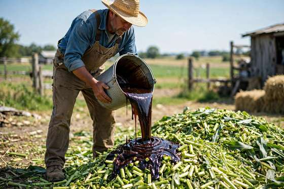
Molasses (0–2 kg per 100 kg) adds sugars for fermentation
Step-by-Step Silage Preparation — 7 Steps
Good silage depends on getting every step right: the right crop, the right harvest stage, fine chopping, tight compaction and a fully airtight seal.
1
Selection of crop(Choose a healthy, disease-free crop. Avoid soil, chemical and mould contamination)
2
Harvesting stage(Harvest maize at approx. 30–35% dry matter, around the one-half to two-thirds milk-line stage)
3
Chopping(Chop into uniform pieces of approx. 1–2 cm — short, even pieces pack tightly and remove air)
4
Additive mixing(Mix molasses or inoculant as per instructions, uniformly through the chopped fodder)
5
Filling and compaction(Fill in thin layers and compact every layer to remove trapped air)
6
Airtight sealing(Cover with good-quality airtight plastic sheets, seal the edges, and place tyres or weights on top)
7
Fermentation and storage(Fermentation takes approx. 3–6 weeks — keep the silo sealed. Properly preserved silage stores for several months)
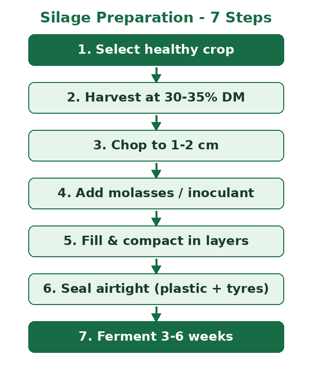
The 7 steps of silage preparation — from crop selection to fermentation
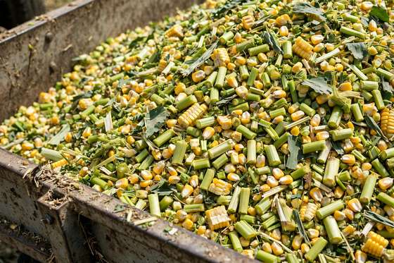
Chop to 1–2 cm — uniform pieces pack tightly
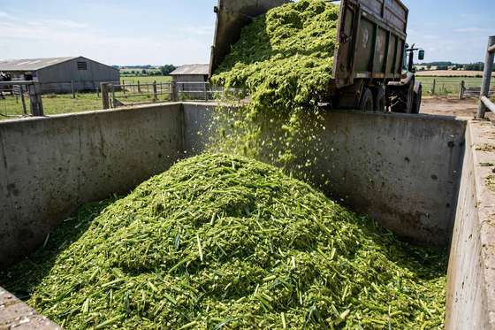
Fill the silo in thin layers
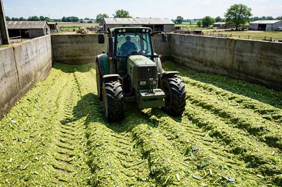
Compact every layer to remove trapped air
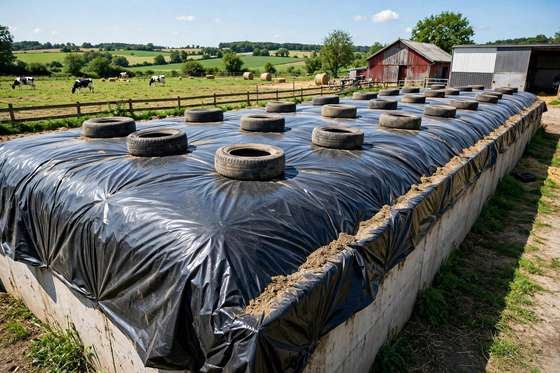
Seal airtight — plastic sheet, sealed edges, tyres on top
Nutritional Value of Maize Silage
Typical approximate values for good-quality maize silage, on a dry-matter (DM) basis:
Nutrient
Typical value
Dry Matter (DM)
30–35%
Crude Protein (CP)
7–10% of DM
Crude Fibre
18–25% of DM
Neutral Detergent Fibre (NDF)
35–50% of DM
Acid Detergent Fibre (ADF)
24–33% of DM
Starch
25–35% of DM
Total Digestible Nutrients (TDN)
65–70% of DM
Metabolizable Energy (ME)
approx. 2.3–2.5 Mcal/kg DM
Ash
3–6% of DM
Note: these values vary with variety, maturity, soil fertility, growing conditions and fermentation quality. Laboratory analysis is recommended for accurate ration formulation.
Major Nutrients and Their Functions
A
Energy and starch(Support milk production, growth, reproduction and body condition)
B
Fibre(NDF and ADF support rumination, chewing and normal rumen function)
C
Protein(Maize silage is relatively low in crude protein — additional sources such as soybean meal or canola meal may be required)
D
Minerals(Provides some calcium, phosphorus and potassium — supplement based on requirements and feed analysis)
Advantages of Silage
1
Green fodder all year round
2
Overcomes seasonal fodder shortages
3
Provides digestible energy for milk production
4
Reduces wastage of surplus fodder
5
Improves feed availability in dry seasons
6
Stores for months without losing quality
7
Supports balanced feeding and better farm management
8
Allows a consistent feeding programme
9
A reliable alternative to fresh fodder during scarcity
10
Preserves surplus seasonal crops for later use
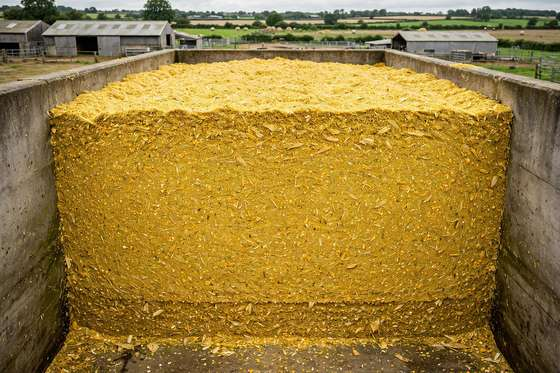
Well-fermented silage — golden, clean and ready to feed
Characteristics of Good-Quality Silage
Check the silage before feeding — look, smell and feel it every time.
1
Pleasant acidic smell(A clean, sour, vinegar-like smell from lactic acid fermentation)
2
Greenish-yellow to golden colour
3
No visible fungal growth
4
Properly fermented texture
5
No rotten or putrid smell
6
Suitable moisture — neither too wet nor too dry
7
pH commonly around 3.8–4.2(The normal pH range for good maize silage)
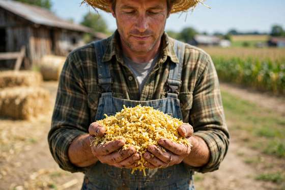
Good silage — golden, pleasant acidic smell, pH 3.8–4.2
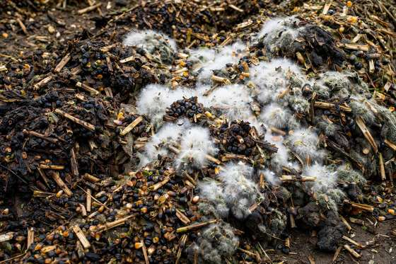
Spoiled silage — white mould, dark and rotten. NEVER feed it
Important: poor-quality silage shows mould growth, excessive heating, abnormal discoloration, a slimy texture or a rotten smell. Never feed visibly mouldy or spoiled silage. Some mycotoxins cannot be detected by smell or appearance alone — when in doubt, discard it.
Feeding Management in Cattle and Buffaloes
Silage should be included as part of a balanced total mixed ration (TMR) — not as the only feed. The quantity is calculated on a dry-matter basis, and high-producing cows need different rations from dry cows, heifers and calves.
1
Introduce gradually over 7–10 days(Let the rumen microbes adjust — never switch feeds suddenly)
2
Clean drinking water at all times
3
Balance protein with protein-rich ingredients(Maize silage alone is low in protein)
4
Supplement minerals and vitamins(As per the animals' requirements)
5
Provide adequate long fibre for rumen health
6
Adjust the ration by body weight, milk production, pregnancy and production stage
7
Avoid spoiled or mouldy silage
8
Maintain hygiene around feed storage and the feeding area
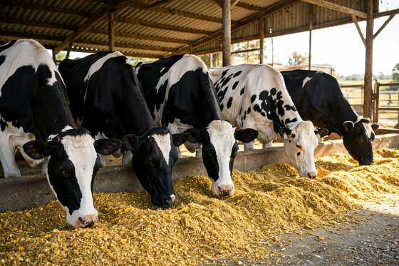
Dairy cows eating silage at the feed bunk
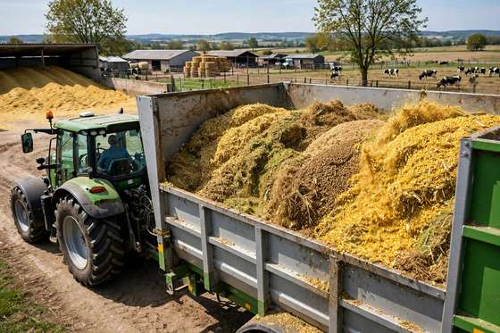
Mix silage into a balanced total mixed ration (TMR)
Common Problems in Silage Making
Problem
Cause
Prevention
Mould growth
Air penetration or poor sealing
Proper compaction and airtight covering
Bad smell
Undesirable fermentation
Harvest at suitable moisture; fill the silo rapidly
Excessive liquid
Excessively wet fodder
Harvest at the correct dry-matter level
Heating
Yeast activity and oxygen exposure
Proper sealing and efficient feed-out management
Low nutritional value
Incorrect harvesting maturity or poor crop quality
Harvest at the recommended growth stage; laboratory analysis
Practical Silage Preparation Formula
A quick field summary for 100 kg of fresh chopped maize fodder:
🌽 Practical formula — 100 kg fresh chopped maize fodder:
Fresh maize fodder: 100 kg
Molasses (optional): 0–2 kg
Inoculant: as per manufacturer's instructions
Target dry matter: 30–35%
Chopping size: approx. 1–2 cm
Fermentation: approx. 3–6 weeks
Storage: airtight
The same principles scale for 500 kg, 1 ton and 10 tons — with proper compaction, moisture and sealing at every scale.
Conclusion
Silage is an important feed conservation technique. Proper crop selection, harvesting maturity, chopping, compaction, fermentation and airtight storage are all essential for good results. Maize silage provides valuable energy and fibre, but its protein and mineral content may not meet all the animals' requirements — so it must be incorporated into a scientifically balanced ration. Proper silage production and feeding improve feed availability, reduce seasonal shortages and support sustainable livestock farming.
References
Penn State Extension – Corn Silage Production and Management.
NC State Extension – Silage and Haylage Production.
University of Florida – Silage Harvesting, Storing and Feeding.
National Research Council (NRC) – Nutrient Requirements of Dairy Cattle.
FAO – Livestock Feed Resources and Fodder Conservation.
Frequently Asked Questions
What is silage and how is it made?
Silage is fermented green fodder preserved under anaerobic (oxygen-free) conditions. Fresh fodder, most commonly maize, is chopped, compacted in thin layers and sealed airtight. Naturally occurring lactic acid bacteria convert plant sugars into organic acids, mainly lactic acid, which lowers the pH and preserves the fodder for long-term storage.
What is the best dry matter level for maize silage?
The target dry matter for maize silage is approximately 30 to 35 percent. Maize should be harvested at around the one-half to two-thirds milk-line stage to reach this level. Fodder that is too wet causes excessive liquid and poor fermentation, while fodder that is too dry is hard to compact and traps air.
Why is chopping size important in silage making?
Maize fodder should be chopped into uniform pieces of approximately 1 to 2 cm. Short, even pieces pack tightly, so trapped air is removed during compaction and good anaerobic fermentation follows. Long or uneven pieces leave air pockets, which cause mould growth, heating and spoilage.
What is the nutritional value of maize silage?
Good-quality maize silage typically contains 30 to 35 percent dry matter, 7 to 10 percent crude protein, 25 to 35 percent starch and 65 to 70 percent total digestible nutrients on a dry-matter basis, with metabolizable energy of about 2.3 to 2.5 Mcal per kg of dry matter. It is a valuable source of energy and fibre, but it is relatively low in protein, so protein sources such as soybean meal or canola meal are usually added to the ration.
How long does silage take to ferment, and how long can it be stored?
Fermentation takes approximately 3 to 6 weeks, and the silo must stay sealed during this time. Properly preserved silage can be stored for several months. Once the silo is opened, feed out the silage efficiently and keep the open face clean and smooth, so air does not cause heating and spoilage.
Can I feed only silage to my cows?
No. Silage should be part of a balanced total mixed ration (TMR), not the only feed. Maize silage is low in protein, so add protein-rich ingredients, and supplement minerals and vitamins as required. Introduce silage gradually over 7 to 10 days, always give clean drinking water, and provide enough long fibre for healthy rumen function.
How do I know if my silage is good or spoiled?
Good silage has a pleasant acidic smell, a greenish-yellow to golden colour, a properly fermented texture and a pH of about 3.8 to 4.2. Spoiled silage shows mould growth, excessive heating, abnormal discoloration, a slimy texture or a rotten smell. Never feed visibly mouldy or spoiled silage — some mycotoxins cannot be detected by smell or appearance alone.
سائیلج کیا ہے اور اسے کیسے بنایا جاتا ہے؟
سائیلج سبز چارے کو ہوا سے بند (آکسیجن سے پاک) حالت میں خمیر کر کے محفوظ کرنے کا طریقہ ہے۔ مکئی کا چارہ کاٹ کر باریک ٹکڑوں میں کاٹا جاتا ہے، پتلی تہوں میں دبا کر بھرا جاتا ہے اور پلاسٹک سے ہوا بند کر دیا جاتا ہے۔ تقریباً تین سے چھ ہفتوں میں خمیر مکمل ہو جاتا ہے اور سائیلج کئی مہینوں تک محفوظ رہتا ہے۔ اچھا سائیلج دودھ دینے والے جانوروں کے لیے توانائی اور ریشے کا بہترین ذریعہ ہے۔
Key Takeaway
Silage turns surplus green fodder into a year-round feed: harvest maize at 30–35% dry matter, chop to 1–2 cm, compact in thin layers, seal airtight, and wait 3–6 weeks for fermentation. Feed it as part of a balanced ration, check quality every time, and never feed mouldy silage. Follow current local veterinary authority guidance and feed supplier instructions.